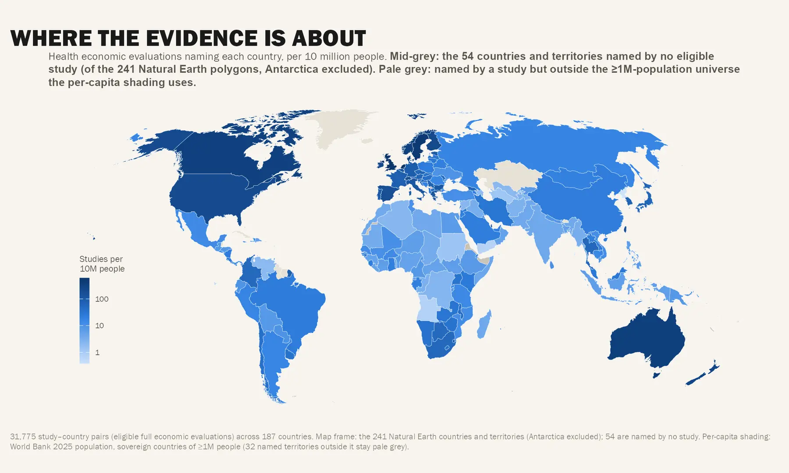

Where health-economic evidence exists — and where it is missing
The evidence base at a glance
Click a card to open its analysis
Studies over time

Thematic analysis
Explore key patterns in the health economic evaluation evidence base.
Studies in view
—
Countries in view
—
Model-based
—
Uses a QALY
—
Studies over time
Map — intensity by country
Composition of the filtered corpus
Countries — any two variables
Top countries in this view
Country landscape
This tab is unfiltered: it always shows the whole corpus and does not read or change the Explorer filters. Click a bubble to select a country and fill the two mix panels and the disease-group × evaluation-type grid below. Click a heatmap cell to read the studies behind it. You can also search for a country with the picker below.
Disease burden × health spending × income group
Evaluation-type mix —
Disease-group mix —
Disease group × evaluation type —
Each cell is a share of its disease-group row, so a row with any studies sums to 100% across the evaluation types. A study can sit in several disease groups, so rows can overlap and their totals exceed the country’s study count. Click a cell to open the studies behind it.
Eligible studies
—
Per 100k DALYs
—
Per US$1bn spending
—
Per million people
—
Output over time — country vs income-group mean
Disease mix — country vs income group
Evaluation-method mix — country vs income group
Approach & reporting — country vs income group
Where the country sits among its income peers